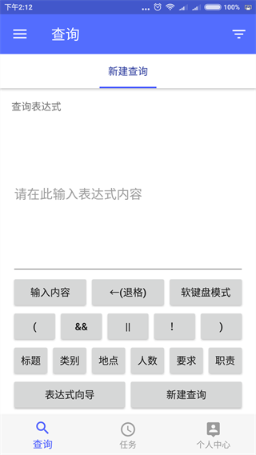

使用说明
虽然整个系统分为服务端和客户端，但因为我们操作的是客户端，因此我要讲解的是客户端的使用说明。
我们先来看一下客户端的界面：

如图所示，成功登录以后，底部导航栏有3个可以选择的选项，它们的作用是：
- 查询：用户能够通过查询表达式进行高度定制化的查询，从而快速找到用户想要的结果。
任务：当查询结果里没有用户想要的结果时，用户可以基于该查询建立查询任务。就算现在没有查询结果，每当服务端捕获到新职位时，都会判断新职位是否满足查询条件，若满足则会通知客户端让用户第一时间得知。
个人中心：包括了设置及一些个性功能，包括浏览记录、我的收藏、以及通知的设置等。
接下来我将按顺序讲解。